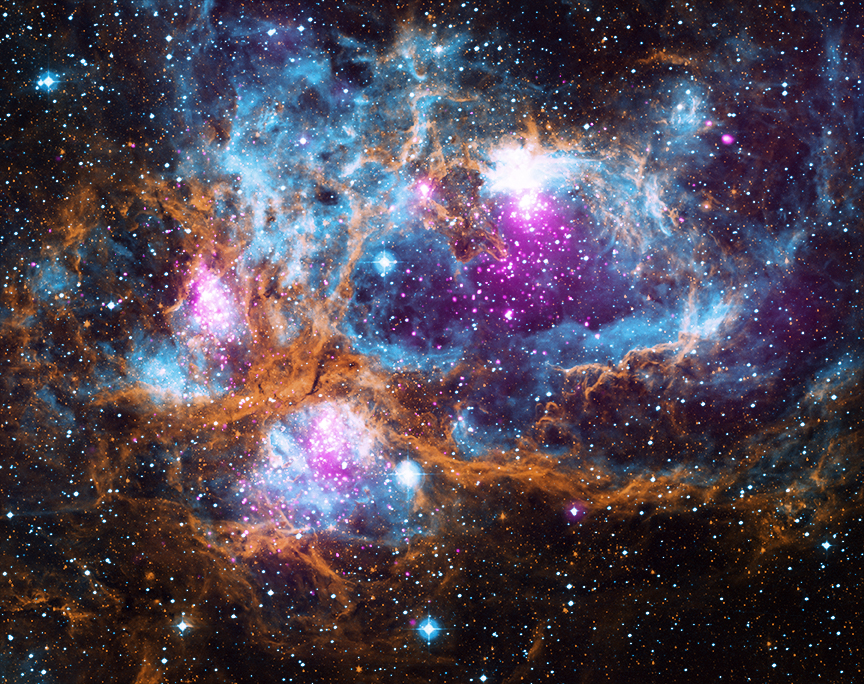
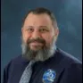
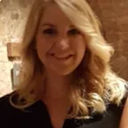
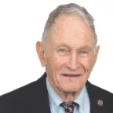
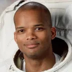
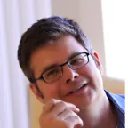

The mission
Science for the American public
A core focus of SAO's work as a Smithsonian research unit is to serve the American public through a commitment to cutting-edge scientific research and free, equitable access to science data and education.
"The sky belongs to everyone."

The Office of Advancement
Building partnerships that power discovery
With the generous support of donors, partners, and friends, SAO's Advancement team coordinates the fundraising that lets scientists and engineers ask, test, and answer humanity's greatest questions about the universe.
Grace Noah
Director of Advancement
A fundraising executive with 17+ years securing philanthropic support for national institutions — overseeing major gifts, donor relations, events, and communications.

Jason Araujo
Advancement Operations Manager
Brings two decades of military service and ten years at the Center for Astrophysics to gift processing, compliance, and donor stewardship.
Matthew Hiser
Assistant Director of Institutional Partnerships
Supports the philanthropic partnerships behind SAO's research, with a background spanning higher education and healthcare development.
Sarah Nielsen
Assistant Director for Individual Giving
Advancement Liaison for major radio astronomy initiatives, including the Black Hole Explorer mission and the next-generation Event Horizon Telescope, after 25+ years with SAO telescope sites from Arizona to Greenland.

Emma Hammack
National Outreach Manager
Brings 10 years of higher education experience as a lecturer and administrator before joining the Smithsonian.
Becca Kim
SNAC Program Director
Leads the Smithsonian National Astronomy Council after seven years at the Smithsonian, supporting the National Museum of Asian Art and the National Portrait Gallery.
Emma Allen
Donor Relations & Events Manager
Leads the strategic events and engagement that connect donors to the Observatory's mission, drawing on a decade of public event experience.
Governance
SAO Advisory Board
The Smithsonian Astrophysical Observatory receives direction, guidance, and oversight from the SAO Advisory Board — advocates for astronomy, science education, engineering, and the next big discoveries.
Thomas Clay
Board Chair · Executive Committee Chair
Boulder, CO
Karina Funk
Vice Chair · Advancement Chair
Somerville, MA
Claire Alexander
Washington, D.C.

Jere Broh-Kahn
Washington, D.C.
Anil Cheriyan
Nominating Committee Chair
Atlanta, GA
David Cowan
Atherton, CA

Robert Curbeam
Atlanta, GA
Ingrid Curtis
Atlanta, GA
Chris Dickerson
Governance Committee Chair
Kildeer, IL
Kelli Furrer
Georgetown, TX
Aleem Gillani
Atlanta, GA
Michael Hausknost
Los Angeles, CA
Jaime Mahoney
Burlington, MA

Jeff Martin
San Francisco, CA
Howard Messing
Westford, MA
Mark Pirrung
Atlanta, GA
Deepak Raghavan
Atlanta, GA
Mitchel Sayare
Paradise Valley, AZ
Brian Schmidt
Canberra, Australia
Phil Skuta
Washington, D.C.
Michael Vostrizansky
New York, NY
Emeritus members
Myra Hart
Lexington, MA
Todd Krasnow
North Palm Beach, FL
Colin R. Masson
Lexington, MA
Michael J. Tuteur
Boston, MA